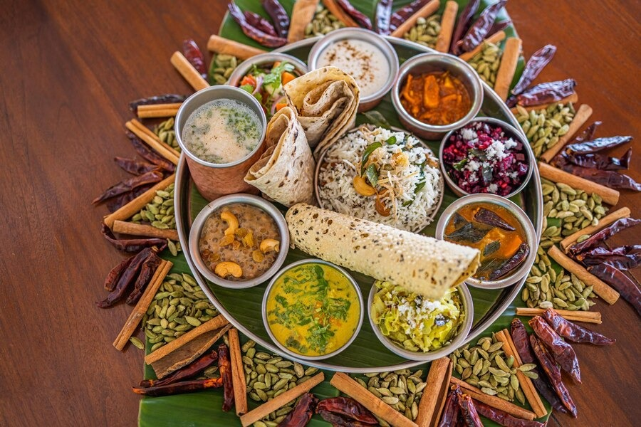
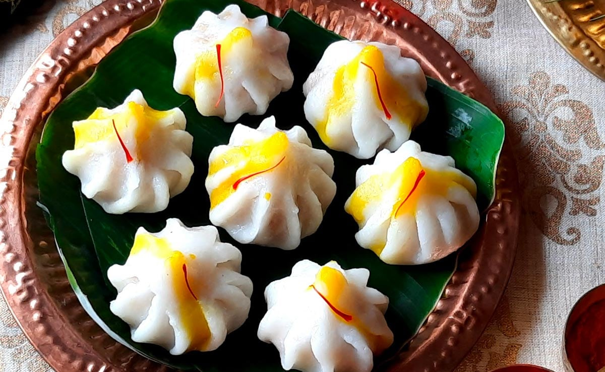
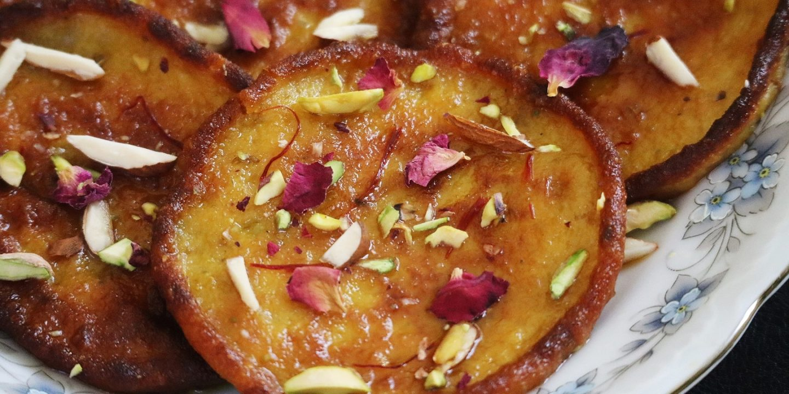
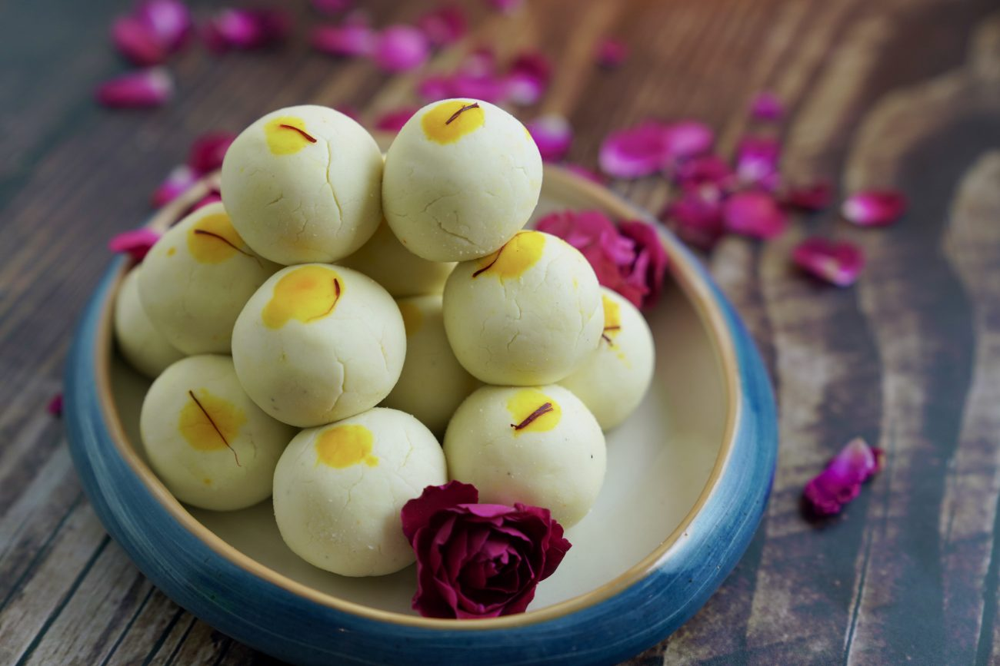
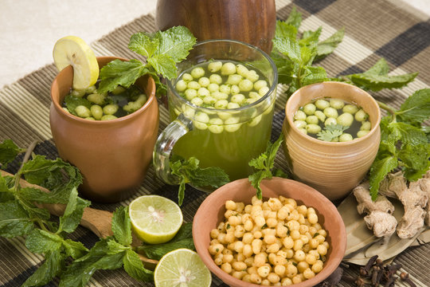

Comidas típicas
Pratos Principais
Tikka Masala

Curry cremoso de frango com molho de tomate e especiarias.
História:
O Frango Tikka Masala é um prato popular da culinária indiana, embora sua origem seja frequentemente debatida. Muitos acreditam que o prato foi criado no Reino Unido por imigrantes indianos, provavelmente nas décadas de 1960 ou 1970, quando um chef indianos teria improvisado, adicionando um molho cremoso e temperado ao frango tikka, um prato tradicional indiano feito com pedaços de frango marinados e grelhados. A história mais comum é de que um cliente pediu algo mais suave, e o chef misturou o frango tikka com molho de tomate, creme de leite e especiarias, criando uma versão mais acessível ao paladar ocidental. Embora o prato tenha se popularizado no Reino Unido, ele é hoje consumido mundialmente, sendo uma deliciosa fusão de sabores indianos adaptados ao gosto global.
Receita e Modo de preparo
Receita:
Ingredientes do frango
1kg de peito de frango em cubos
1 cebola picada
3 dentes de alho picados
1 pimentão verde em cubos
2 colheres de sopa de azeite
1 colher de sopa de gengibre ralado
1 colher de sopa de curry em pó
1/2 colher de sopa de cominho em pó
1/2 colher de sopa de cúrcuma em pó
1/2 colher de sopa de canela em pó
1/2 colher de sopa de pimenta-do-reino
400 ml de leite de coco
1 colher de sopa de amido de milho
Sal a gosto
Coentro fresco picado para finalizar
Modo de preparo do Tikka Masala:
Em uma panela grande, refogue a cebola e o alho no azeite até dourar. Adicione em seguida o pimentão verde em cubos e refogue por mais alguns minutos. Coloque os cubos de frango e refogue até que fiquem dourados. Acrescente o gengibre ralado, o curry em pó, o cominho em pó, a cúrcuma em pó, a canela em pó e a pimenta-do-reino. Refogue em seguida por mais alguns minutos, mexendo bem para incorporar os temperos. Adicione o leite de coco e deixe ferver por alguns minutos. Dissolva o amido de milho em um pouco de água e então, adicione à panela para engrossar o molho. Cozinhe por mais alguns minutos. Por fim, tempere com sal a gosto e finalize com coentro fresco picado.Aloo chaat

Salada de batatas com temperos e chutneys.
História: O Aloo Chaat é uma das mais populares iguarias de rua da Índia, conhecida por seu sabor picante, doce e refrescante. A palavra "aloo" significa batata em hindi, e "chaat" é um termo que engloba uma variedade de lanches de rua típicos da Índia, caracterizados por uma combinação de sabores contrastantes. O Aloo Chaat é uma mistura de batatas fritas ou cozidas temperadas com especiarias, ervas frescas, chutneys e outros ingredientes, criando uma explosão de sabores em cada mordida. A origem do chaat remonta à antiga Índia, com raízes na tradição culinária de Uttar Pradesh, especialmente na cidade de Delhi, onde as barracas de *chaat* se tornaram um elemento essencial da cultura alimentar urbana. Embora existam diferentes tipos de chaat, o Aloo Chaat se destaca por sua simplicidade e sabor irresistível. As batatas, que são a base do prato, são acompanhadas de ingredientes como iogurte, tamarindo, cebola, pimentas e coentro, e, em algumas variações, até de granola ou pêssego. O Aloo Chaat não só é um prato delicioso, mas também representa a essência da comida de rua indiana — rápida, acessível e incrivelmente saborosa. Sua popularidade se espalhou por todo o país e além, fazendo com que se tornasse uma verdadeira iguaria global, com versões sendo servidas em restaurantes e quiosques em várias partes do mundo.
Receita e Modo de preparo
Receita:
4 batatas (cozidas);
1 xícara de grão de bico (cozido);
1/4 xícara de óleo;
1/2 xícara de tomate (picado);
1/2 xícara de cebola (picada);
2-3 colheres de sopa de folhas de coentros;
2-3 pimentões verdes;
1 colher de chá de sementes de cominhos (esmagadas e torradas);
Sal a gosto;
Sal preto a gosto;
Molho de tamarindo, conforme necessário;
1 colher de chá de masala;
1 colher de chá de pimenta vermelha em pó;
Ingredientes da massa katori;
2 xícaras de farinha de trigo;
1 colher de chá de sementes de carambola;
1/2 colher de chá de sal;
2 colheres de sopa de óleo;
Água conforme necessário;
1/2 colher de chá de cominho;
Ingredientes do molho de tamarindo;
1 xícara de ameixa (demolhada durante a noite);
1/4 xícara de tamarindo sem sementes (demolhada durante a noite);
1/2 xícara de Shakar;
Sal a gosto;
Sal preto a gosto;
1 colher de chá de flocos de pimenta vermelha;
1/2 colher de chá de masala;
1 colher de chá de cominhos (esmagados);
2-3 xícaras de água.
Modo de preparo Aloo Chaat:
Para preparar o *Aloo Chaat*, comece cozinhando as batatas até ficarem macias. Depois, corte-as em cubos e frite-as levemente em óleo até ficarem crocantes. Em uma tigela, misture cominho em pó, coentro em pó, pimenta de caiena, garam masala, açúcar e sal. Adicione essa mistura às batatas e mexa bem. Em seguida, regue com chutney de tamarindo, suco de limão e, se desejar, um pouco de iogurte. Finalize com cebola picada, coentro fresco e sementes de romã para decorar. Sirva imediatamente, saboreando o contraste de sabores picantes, doces e frescos!Thali

Refeição completa com porções variadas de curries, arroz e acompanhamentos.
História: O Thali é uma refeição tradicional da culinária indiana, caracterizada pela diversidade e pela harmonia de sabores. A palavra "thali" significa "prato" em hindi e, no contexto alimentar, refere-se a uma refeição completa servida em uma única bandeja, composta por uma variedade de pratos que representam diferentes elementos da cozinha indiana. A tradição do thali remonta a séculos, com raízes profundas nas antigas civilizações indianas, incluindo os Vedas, que descreviam práticas alimentares que envolviam equilíbrio e moderação. Um thali típico inclui uma combinação de pratos quentes e frios, como arroz, dal (lentilhas), vegetais, chapati (pão indiano), curry, chutneys, picles e, às vezes, sobremesas. A ideia central é proporcionar uma refeição nutritiva e balanceada, onde os sabores salgados, doces, amargos, picantes e azedos se complementam. Dependendo da região e da tradição, o conteúdo do thali pode variar bastante — na região do Gujarat, por exemplo, o thali pode ser predominantemente vegetariano, enquanto no sul da Índia é comum a presença de pratos à base de arroz e cocô. Mais do que uma refeição, o thali é uma expressão da rica diversidade cultural e gastronômica da Índia, refletindo a filosofia de que a alimentação deve ser uma experiência sensorial e nutritiva, equilibrando os elementos do corpo e da mente.
Ingredientes e Modo de preparo
Ingredientes:
Grão: arroz ou biscoitos feitos com trigo e painço;
Lentilhas: pratos de dahl ou sambar;
Vegetais: vegetais da estação;
Chutney: um molho preparado com frutas, ervas, especiarias, vegetais e peixes;
Raita: coalhada misturada com um tipo de vegetal;
Conservas: frequentemente feitas com manga crua;
Papadum: um salgado frito preparado com arroz, farinha ou lentilhas;
Modo de preparo do Thali:
Como preparar seu thali O thali não é preparado usando apenas um tipo de ingrediente, não existem muitas regras para fazer este tipo de prato indiano. Na verdade, até mesmo na Índia, existem diversas variações do thali. Algumas regiões preferem que sua refeição com thali seja totalmente vegetariana, enquanto outras adicionam peixes ou outros tipos de carne.A única regra que precisa ser seguida na produção de um thali são as dos seis sabores Ayurveda. Isso consequentemente também implica que para preparar seu thali você provavelmente vai usar um dos sete ingredientes comuns citados acima. Mas a escolha de preparação e de gostos depende totalmente de você. O mais importante é que o thali seja servido em um grande prato, com outros katoris (potes) dispostos sobre sua extensão — o katori vai ser o utensílio usado para armazenar a comida. Se você gosta de comer carne, é possível preparar uma receita que lhe agrade para agregar ao thali. Porém, se você é vegetariano, o consumo da carne não é obrigatório e você pode preparar quaisquer receitas que sejam de seu gosto. Por fim, se você for vegano, basta trocar alguns ingredientes na preparação para substituir os derivados de animais e então deliciar o seu thali.
Sobremesas Típicas
Modak

Bolinho doce de arroz recheado com coco e açúcar.
História: O modak é um doce tradicional da culinária indiana, especialmente popular nas celebrações do Ganesh Chaturthi, festival dedicado ao deus Ganesha. Originário do estado de Maharashtra, o modak é tradicionalmente feito de arroz ou farinha de trigo, recheado com uma mistura doce de coco, açúcar e cardamomo, e moldado em forma de uma pequena "bolsa". Segundo a mitologia hindu, Ganesha adorava modaks, e eles são considerados um símbolo de felicidade e prosperidade. Acredita-se que o modak tenha raízes antigas na Índia, sendo mencionado em textos históricos e religiosos. Com o tempo, o doce ganhou popularidade em várias regiões da Índia, com variações no recheio e no preparo. Hoje, além de ser oferecido a Ganesha durante o festival, o modak também é apreciado como um doce comum em muitas casas indianas.
Receita e Modo de preparo
Receita:
Ingredientes do frango
1 colher de óleo vegetal;
2 xícaras de água;
1 xícara de coco ralado;
1 xícara de farinha de arroz;
½ colher de açúcar mascavo;
1 colher de castanha de caju picada;
¼ de xícara de leite integral.
Modo de preparo Doce Modak:
Modo de preparo Para fazer a massa, ferva a água numa panela e adicione o óleo vegetal. Depois, coloque a farinha de arroz e misture bem até formar a massa. Deixe esfriar .Para o recheio, derreta a manteiga em uma panela, em fogo baixo, e adicione o coco ralado, a castanha de caju e o açúcar. Misture bem. Feito isso, adicione o leite e mexa sem parar por cerca de 3 minutos em fogo médio (até que ele fique “crocante”, parecido com uma cocada brasileira).Após o procedimento, deixe esfriar em temperatura ambiente. Na montagem, pegue a massa, divida-a em 9 partes e forme bolinhas. Depois, faça um furo com o dedo e preencha com o recheio .Deixe descansar e sirva em temperatura ambiente.Malpua

Panqueca doce embebida em calda de açúcar.
História: O malpua é um doce tradicional da culinária indiana, especialmente popular no norte e no leste do país, especialmente durante festividades como o Holi e o Diwali. Sua origem remonta a séculos atrás, com uma mistura de influências de várias culturas que passaram pela Índia, incluindo os persas e os mogóis. O nome "malpua" vem do árabe "malfū'ah", que significa "dobrado" ou "enrolado", uma referência à forma como o doce é preparado. Feito com uma massa à base de farinha, leite, açúcar e às vezes banana ou coco, o malpua é frito até dourar e depois mergulhado em uma calda de açúcar. O doce é muitas vezes servido com um toque de cardamomo ou sementes de açafrão para dar um aroma especial. Embora existam variações regionais, o malpua permanece um símbolo de celebração e é apreciado em momentos especiais, oferecendo um gostinho doce da história e da cultura indiana.
Receita e Modo de preparo
Receita:
Ingredientes do frango
1 colher de óleo vegetal;
2 xícaras de água;
1 xícara de coco ralado;
1 xícara de farinha de arroz;
½ colher de açúcar mascavo;
1 colher de castanha de caju picada;
¼ de xícara de leite integral.
Modo de preparo Doce Modak:
Modo de preparo Para fazer a massa, ferva a água numa panela e adicione o óleo vegetal. Depois, coloque a farinha de arroz e misture bem até formar a massa. Deixe esfriar .Para o recheio, derreta a manteiga em uma panela, em fogo baixo, e adicione o coco ralado, a castanha de caju e o açúcar. Misture bem. Feito isso, adicione o leite e mexa sem parar por cerca de 3 minutos em fogo médio (até que ele fique “crocante”, parecido com uma cocada brasileira).Após o procedimento, deixe esfriar em temperatura ambiente. Na montagem, pegue a massa, divida-a em 9 partes e forme bolinhas. Depois, faça um furo com o dedo e preencha com o recheio .Deixe descansar e sirva em temperatura ambiente.Sandesh

Doce à base de queijo paneer e açúcar.
História: O sandesh é um doce tradicional da culinária bengali, muito apreciado no leste da Índia, especialmente em Bengala Ocidental. Sua origem remonta a séculos atrás e está intimamente ligada à cultura e às festividades da região. Feito à base de chhena (um tipo de queijo fresco indiano), o sandesh é conhecido por sua textura suave e delicada, que derrete na boca. A história do sandesh remonta ao período mogol, quando a técnica de preparar queijos frescos foi aprimorada nas cozinhas reais. No entanto, foi na região de Bengala que o doce realmente ganhou popularidade, especialmente após a introdução do uso de chhena como base para diversos doces. Durante as festas, como o Durga Puja, o sandesh se tornou um dos principais destaques, sendo moldado em várias formas criativas, muitas vezes com toques de açafrão, cardamomo ou até frutas para adicionar sabor. Hoje, o sandesh continua a ser uma iguaria muito celebrada, simbolizando a rica herança gastronômica de Bengala e a habilidade artesanal de seus confeiteiros.
Receita e Modo de preparo
Receita:
1 litro de leite integral
2 colheres de sopa de vinagre ou suco de limão (para coagular o leite)
1/4 de xícara de açúcar (ou a gosto)
1/2 colher de chá de cardamomo em pó (opcional)
1 colher de chá de essência de baunilha (opcional)
Pistaches ou amêndoas picadas para decorar (opcional)
Sementes de açafrão ou corante alimentar (opcional, para colorir)
Modo de preparo Doce Sandesh:
Para preparar o sandesh, ferva o leite até que comece a formar espuma. Adicione o vinagre ou suco de limão para coalhar o leite e, em seguida, retire do fogo. Coe a mistura, separando o chhena (a parte sólida) do soro. Amasse bem o chhena até obter uma massa lisa. Em uma panela, cozinhe a massa em fogo baixo com o açúcar até que fique um pouco mais firme, mexendo constantemente. Retire do fogo e, se desejar, adicione cardamomo em pó ou essência de baunilha para dar sabor. Modele a massa em formas ou bolinhos, decore com pistaches ou amêndoas e deixe esfriar antes de servir. O sandesh pode ser servido tanto simples quanto com uma pitada de açafrão para colorir.Bebidas Típicas
Chai Latte

Chá preto com leite e especiarias.
História:
O Chai Latte é uma bebida que combina o tradicional chá indiano com leite vaporizado, criando uma fusão de sabores que conquistou o mundo. A palavra "chai" significa simplesmente "chá" em hindi, e "latte" é um termo italiano que se refere a uma bebida com leite. A origem do chai latte remonta à Índia, onde o "masala chai" é uma mistura de chá preto com especiarias como canela, cardamomo, cravo e gengibre, além de açúcar e leite.
A versão moderna do chai latte, como é conhecida no Ocidente, surgiu nos Estados Unidos na década de 1990, quando cafeterias começaram a servir esta bebida inspirada no tradicional masala chai, mas com um toque ocidental, adicionando leite vaporizado para suavizar o sabor forte das especiarias. Desde então, o chai latte se espalhou por cafés do mundo inteiro, sendo apreciado por sua combinação reconfortante de especiarias, chá e leite.
Receita e Modo de preparo
Receita:
1 sachê de chá preto
100 ml de água quente
100 ml de leite
2 paus de canela
3 sementes de cardamomo
4 cravos-da-índia
1 anis-estrelado (opcional)
1 pitada de gengibre em pó
Açúcar a gosto
Modo de preparo do Chai Latte:
Modo de preparo 1. Prepare o chá em uma caneca e deixe o sache na água por 10 minutos. 2. Em uma panela, esquente o leite, mas não deixe ferver. 3. Inclua as especiarias e desligue o fogo. 5. Tampe e deixe curtir por 10 minutos. 6. Coe o leite e misture-o com o chá. 7. Adoce se sentir necessidade. 8. Agora é só servir. Bom apetite.Buttermilk Masala

Leitelho temperado com especiarias.
História:
O Buttermilk Masala é uma bebida tradicional da culinária indiana, conhecida por sua combinação refrescante e levemente picante. O "buttermilk" é um líquido fino obtido após a produção de manteiga, que na Índia é conhecido como "chaas". O Buttermilk Masala é uma variação deste, temperado com uma mistura de especiarias como cominho, gengibre, pimenta preta, coentro e, às vezes, hortelã.
Essa bebida é consumida há séculos na Índia, especialmente durante os meses quentes, devido ao seu efeito refrescante e digestivo. O Buttermilk Masala é considerado uma excelente maneira de ajudar na digestão e de equilibrar o sistema digestivo após uma refeição. Além disso, tem raízes em várias tradições, tanto no norte quanto no sul da Índia, e é uma parte importante da culinária de rua e das refeições familiares. Hoje, é apreciado tanto na Índia quanto em outros países, como uma bebida saborosa e nutritiva.
Receita e Modo de preparo do Buttermilk Masala
Receita:
- 1 litro de iogurte natural (sem açúcar);
- 1/2 xícara de água gelada;
- 1 colher de sopa de ghee ou óleo vegetal;
- 1 colher de chá de cumin (cominho) em pó;
- 1 colher de chá de coentro em pó;
- 1/2 colher de chá de pimenta preta em pó;
- 1/2 colher de chá de garam masala em pó;
- 1/2 colher de chá de sal;
- 2-3 folhas de coentro fresco picadas (opcional);
- 1-2 pimentas verdes picadas (opcional).
Modo de preparo Buttermilk Masala:
1. Em uma tigela grande, misture o iogurte com a água gelada até obter uma consistência suave;2. Aqueça o ghee ou óleo em uma panela pequena;
3. Adicione o cominho, coentro, pimenta preta e garam masala. Cozinhe por 1-2 minutos, até fragrante;
4. Despeje a mistura de temperos no iogurte e misture bem;
5. Adicione o sal e misture novamente;
6. Decore com folhas de coentro e pimentas verdes picadas, se desejar;
7. Sirva gelado.
Jal-jeera

Bebida refrescante de água com cominho e hortelã.
História:
O Jal Jeera é uma bebida refrescante e levemente picante originária da Índia, tradicionalmente consumida para ajudar na digestão e para refrescar o corpo, especialmente em climas quentes. A palavra "jal" significa água em hindi, e "jeera" é cominho, uma das especiarias principais dessa bebida. Além do cominho, o Jal Jeera é preparado com uma mistura de especiarias como hortelã, gengibre, tamarindo, pimenta preta, sal e às vezes um toque de açúcar ou limão, criando um sabor único e equilibrado.
A história do Jal Jeera remonta às antigas tradições de Ayurveda, onde as especiarias eram utilizadas não só para dar sabor, mas também para promover o bem-estar e facilitar a digestão. Originalmente, o Jal Jeera era consumido como um tônico digestivo, muitas vezes servido antes ou após as refeições. Hoje, o Jal Jeera é uma bebida popular em festivais, casamentos e em muitos lares indianos, sendo uma forma saborosa de se refrescar e melhorar a saúde digestiva.
Receita e Modo de preparo do Jal-jeera
Receita:
- 1 xícara de água gelada;
- 1/2 xícara de suco de limão;
- 1/4 xícara de suco de gengibre fresco;
- 1 colher de sopa de pó de cúrcuma (haldi);
- 1 colher de sopa de pó de cominho (jeera);
- 1/2 colher de sopa de pó de coentro (dhaniya);
- 1/4 colher de sopa de pimenta preta em pó;
- 1/4 colher de sopa de sal;
- 2-3 folhas de coentro fresco picadas (opcional);
- Gelo a gosto.
Modo de preparo Jal-jeera:
1. Misture a água, suco de limão e suco de gengibre em uma tigela;2. Adicione o pó de cúrcuma, cominho, coentro, pimenta preta e sal. Misture bem;
3. Deixe descansar por 30 minutos para permitir que os sabores se misturem;
4. Coe a mistura para remover os resíduos;
5. Adicione gelo e misture novamente;
6. Decore com folhas de coentro picadas, se desejar;
7. Sirva imediatamente.